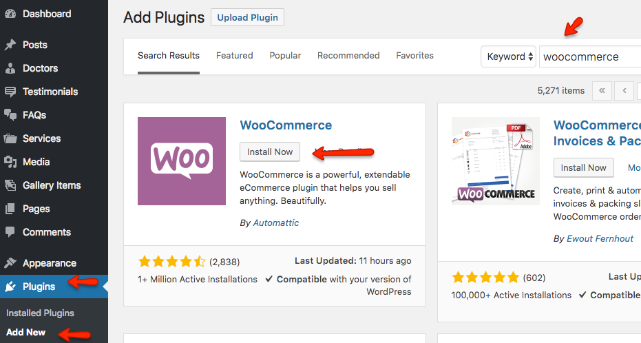
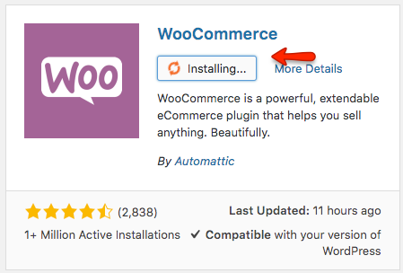
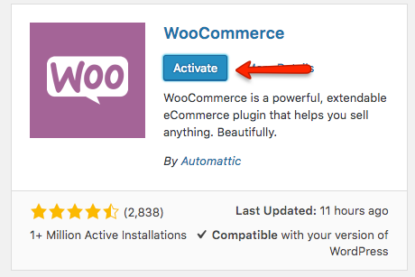
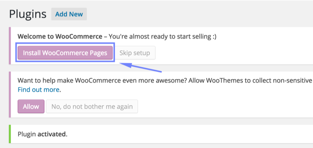
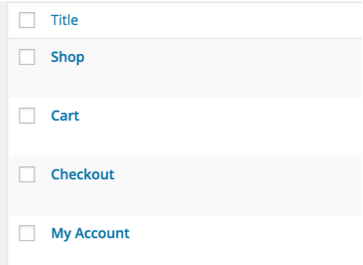
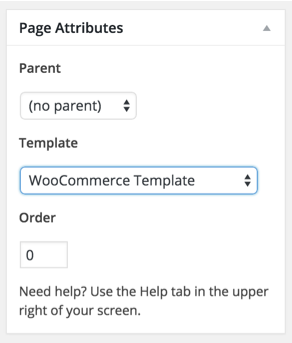
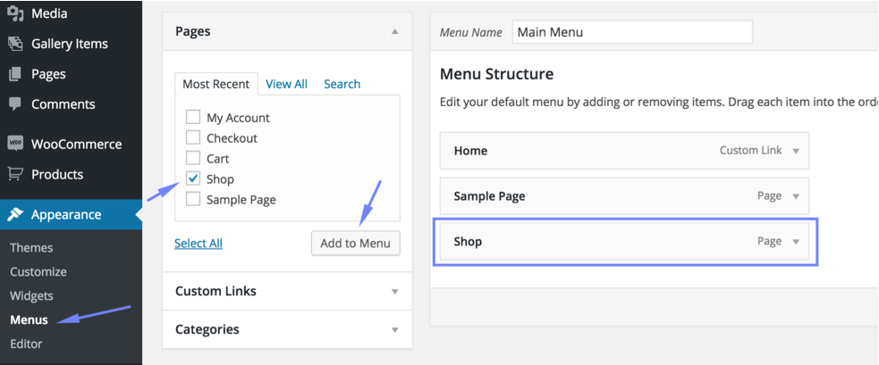

How to set up WooCommerce Shop
This theme uses WooCommerce Plugin to provide shop related functionality. Please follow the steps below to setup your shop.
- Go to Plugins » Add New and search for WooCommerce and install it as displayed in screen shot below.
 
- Activate Plugin once installed.

- Install WooCommerce Sample Pages after plugin activation.

It will add 4 pages (Shop, Cart, Checkout and My Account).

- Edit & Update ( Cart page, Checkout page and My Account page ) one by one and assign WooCommerce Template as page template.

- Go to Appearance » Menus and add Shop page into your desired menu. Save the menu after adding shop page.

Visit the shop page and you will find a message that no product is found.
- Now, You can add your own products or you can import dummy data to play with basic stuff.
To Import Dummy Data you can follow this helping article.